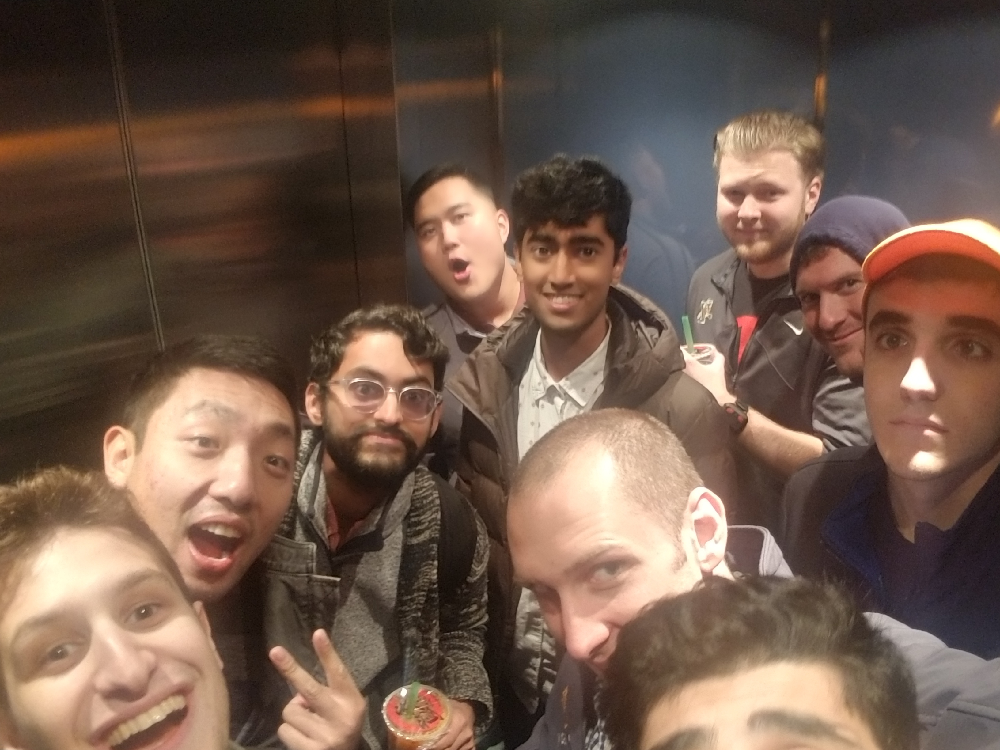
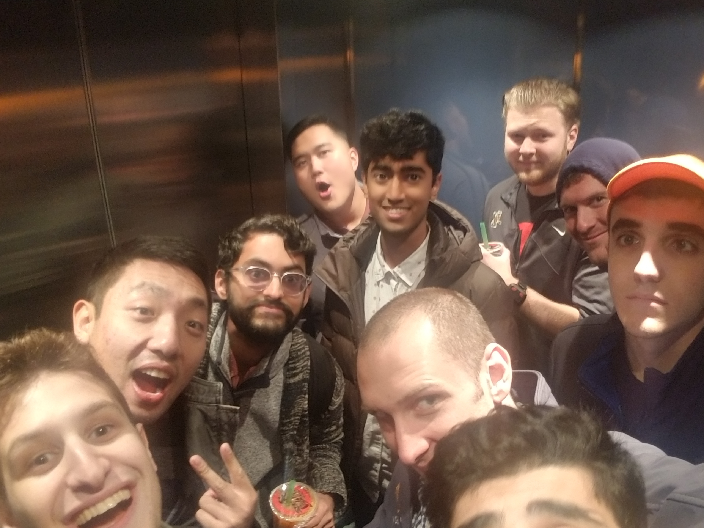

Pison
My first experience in a work environment as a software developer. Pison creates a device that looks like a watch but there are electrodes placed on it which read the neuromuscular activity in your hand. The purpose of the Pison device is to be used as a hands free controller. We use activations as clicks for our controller. An activation is when a user lifts their finger and the activity picked up by the device hits a certain threshold. Navigating through a UI was typically done with hand gestures. For example, navigating a list using the Pison device could be done by rolling your wrist right to go down the list and left to go up the list. Then just lift your finger when you are on the option you'd like to select. At Pison I got to experience the journey a young startup needs to take to make it in a world filled with tech startups. The amount of progress I saw over my six months was really cool to look back at. We were constantly improving the device and demoing to potential investors to show the worth in our product. I also got to meet a lot of really cool people from a lot of different places. We were always experimenting with the latest tech and got to work with a lot of virtual and augmented reality devices.
 
